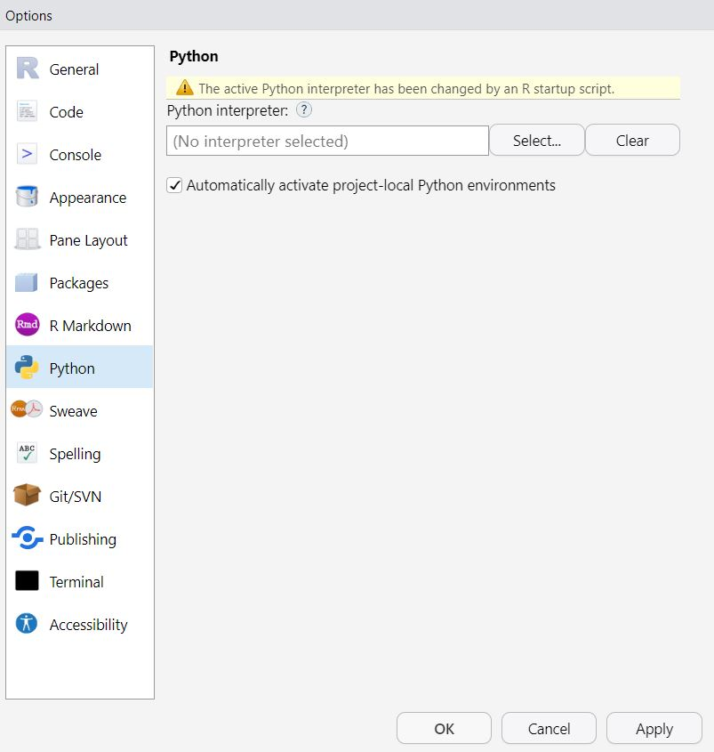

# Check if renv is installed
if (!require("renv")) {
# Install renv if it is not already installed
install.packages("renv")
}General Instructions
NoteObjectives
This setup tutorial is optional for those who are interested in the following:
Learning about (and using) virtual environments in R to ensure reproducibility (benefits explained below).
Learning about using python üêç in (and with) R. This is useful for some ML lab sessions, and cutting-edge ML is often first implemented in python.
TipAccessing the source code
Although we do not provide the Qmd file for the source code, you can always use the </> Code button on the top right of the page to get the source code.
ImportantData for the labs
The datasets used for all the labs can be found here üìÅ.
Virtual environments in R (renv)
The What & The Why
As you start working on machine learning in R, you’ll be using various R packages that provide different functionalities. As you might know, managing multiple packages and their dependencies can be a daunting task, especially when you’re new to programming.
This is where renv comes in handy. renv is a package management tool that helps you manage the packages used in an R project, making it easier to handle dependencies and ensuring that your project is reproducible. Here are some specific reasons why renv is particularly useful for machine learning lab sessions:
Consistent environment: When you work on machine learning lab sessions, you’ll often be working with complex models that use multiple R packages. It’s crucial to ensure that all the packages used in your project are compatible with each other. With
renv, you can create a consistent environment by isolating the packages used in your project and making sure they work well together.Easy installation and setup:
renvmakes it easy to set up a new R project with the required packages. Once you’ve created anrenvproject, you can easily install all the required packages with a single command. This saves you time and ensures that you have all the necessary packages for your machine learning lab sessions.Reproducibility: Reproducibility is critical in machine learning lab sessions. With
renv, you can easily share your code and the exact packages used in your project with your peers or instructors, making it easy for them to reproduce your results.
In summary, renv is an essential tool for managing packages in R and ensuring that your machine learning lab sessions are efficient and reproducible. It helps you avoid compatibility issues, simplifies installation and setup, and makes it easy to share your work with others. In python, you have similar tools such as virtualenv, venv and conda. We hope you find renv useful as you begin your journey into machine learning with R!
The How
To create a new renv project, first set your working directory to the location where you want to create the project, and then run the command renv::init() which has to be executed only once. We recommend creating a main folder for all your ML-related exercises and running the command at the top directory. Running the initialization will create a bunch of auxiliary files, such as renv.lock to keep track of the packages that you’re using and all their versions. If you move to another computer or something goes wrong with your packages, you can always re-install the packages listed in your renv.lock to the previous versions using renv::restore(). To occasionally update your packages, you can always use renv::snapshot(); however, every time that you start a new R session, if renv detects any changes, it will automatically ask you to run renv::status() to see if the list in renv.lock needs updating.
# Check if renv is already initialized
if (!file.exists("renv.lock")) {
# Initialize renv project
renv::init()
# Restore packages
renv::restore()
}Python üêç in R (reticulate)
Small Motivation
Most careers after HEC require data literacy and data-driven insights to solve business problems. To that end, R is a potent tool; however, in the realm of machine learning, Python is arguably more demanded and, therefore, can be a good tool in your toolbox. Additionally, python is a widely-used language in the industry and offers powerful libraries for data manipulation, analysis, and modeling. Furthermore, you don’t need to be a technical person to learn python as there are many resources available online, and it’s a language that is relatively easy to pick up, even for absolute beginners to programming. Combining the strengths of both R and Python can enhance your workflow and improve your ability to work with data. To understand how R and Python compare, you are highly encouraged to watch this video by IBM on R vs Python.
Configuration
You need to follow a few steps to ensure that everything runs smoothly. There are several solutions for running the python part of the exercises. Our preferred method is to run python in R using the reticulate package as recently there has been a smooth integration between the two languages, especially if your IDE of choice (integrated development environment) is Rstudio. This library provides a comprehensive set of tools for interoperability (i.e., exchanging languages) between python and R. You can either do this in your own central python installation or use a virtual environment where we’ll install the desired python packages. In python, virtual environments are similar to those of R (i.e. renv), allowing you to create isolated python installations, making it easier to manage different projects, and avoiding compatibility issues between dependencies. This setup usually works well, but if there are any individual issues, do not hesitate to contact me (Ilia). With that said, let’s get started with python!
First, load all the corresponding libraries to install and run python:
library(reticulate)
library(tidyverse)To install python in R, we will use miniconda, a smaller version of Anaconda package manager. If you don’t have Miniconda or Anaconda, first run reticulate::install_miniconda(), which will automatically create a virtual environment for you.
# reticulate::install_miniconda() # if you got an error, you could also try `install_python()` or installing conda seperately on your OSNow, we will create our virtual environment with the command reticulate::conda_create(). We will then make sure our rstudio is using this correct conda environment by enforcing it via reticulate::use_condaenv().
# assign the right virtual environment for the exercises
env_name <- "MLBA"
# if the virtual enviroment does not already exist, only then create then
if (!env_name %in% reticulate::conda_list()$name) {
reticulate::conda_create(env_name, pip = TRUE) # we use pip for installations
}
# make sure we're using the right environment
reticulate::use_condaenv(env_name)
# Check if python is setup properly now
reticulate::py_available()If you have made it here so far and see the name MLBA in your python path, you have successfully installed/configured python and setup the virtual environment(s)ü•≥.
Bonus: Using Rstudio to select Python path
In case you wanted to use the Rstudio interface, you can always go to Tools > Project Options (or Global Options if you’re not using renv) and then select the version inside the Python field as shown below.

Python (very brief) overview
We do not teach the principles of python programming during this course. With that said, if you already have a background in R from your previous courses (e.g., DSFBA, QMM), we provide a few links to help you get started. If you’re new to python, feel free to continue reading; otherwise, skip to the section Calling Python in R.
If you would like to see a crash course in python on different data structures and types, check out this video on Python for Data Science [Crash Course] (you can skip the installation part). You may notice that much of the syntax is similar to R.
Python data-oriented libraries
Python provides a range of libraries for data manipulation, analysis, and modeling, including Pandas (similar to tibble+dplyr), which offers easy-to-use data structures for working with tabular data, and NumPy (dplyr+data.table), which provides powerful tools for array manipulation, linear algebra, and Fourier analysis. For data visualization, python offers Matplotlib (similar to plot() in base R). For machine learning, Scikit-learn (similar to the caret package in R which we will be introduced later) provides a wide range of tools for classification, regression, clustering, and dimensionality reduction, while Tensorflow & Keras (both used for deep learning and neural networks) are also popular libraries in this space which are available in both R and Python. These libraries are just a few examples of the many tools available in python that can help you work with data and build machine learning models. If you’re interested to learn about these libraries and how to manipulate Pandas dataframes, you can check out this other video on Data Analysis with Python - Full Course for Beginners (Numpy, Pandas, Matplotlib, Seaborn) (it’s slightly long).
Assigning variables in Python vs. R
For those of you new to python, there’s an important difference between R and Python when assignment variables. In Python, when you assign a variable to another variable, you are creating a reference to the same object in memory, so any changes made to one variable will be reflected in the other variable as well. This is demonostrated in the example below:
a = [1, 2, 3]
b = a
print(a, b)
b[0] = 4 # we only change `b`
print(a, b) # the variable `a` also changed unlike how R treats the variable
TipIndexing in R vs. Python
Another difference between R & Python is that the index (first value of any object) starts from 0 (python) rather than 1 (R). So if you have a list, the first element is python is starting at element 0.
To create a separate copy of the object, you need to use the .copy() method (python way of saying a function).
a = [1, 2, 3]
b = a.copy() # create a separate copy of the list
print(a, b)
b[0] = 4 # modify only `b`
print(a, b) # variable `a` does not changeIn R, on the other hand, assignment creates a copy by default, so you don’t need to use a .copy() method. Any changes you make to one variable will not affect the other variable, because they are separate copies of the same object.
Calling Python in R
Installing Python libraries
You can install any python package in R using the reticulate::py_install() command. This is similar to calling install.packages() in R. You may have heard of CRAN in R, a central repository for all R packages. In Python, the equivalent of CRAN is PyPI (Python Package Index). If you want the latest version of the packages, it is recommended to install packages using pip. To do so, you must set the argument pip=TRUE inside reticulate::py_install(), as demonstrated below.
We will install all the packages we need for this particular setup. This should be go smoothly with the following command:
# Install python package into virtual environment
reticulate::py_install(c("jupyter", "pandas", "matplotlib","statsmodels","scikit-learn", "seaborn", "mlxtend", "lime", "mkl-service", "xgboost","scikit-learn-extra"), envname = "MLBA", pip=TRUE)
Note
mkl-service for Mac Users
Please note that the mkl-service python package from above is specific to windows/linux users and is not needed for Mac users. In case of any errors (especially on M1 chips), feel free to remove it.
Let’s checked if the package is installed successfully.
# import package that is used for dealing with data.frames in Python (equivalent of tibble+dplyr)
pd <- reticulate::import("pandas")
# import the package for plotting in python
plt <- reticulate::import("matplotlib.pyplot")
# import the library which we will use for linear regression
sm <- reticulate::import("statsmodels.api")No error messages? Then installation was successful!
Calling Python and R objects interchangeably
All the data types in R vs. Python are explained below (image from reticulate’s home page). If you need to explicitly change between objects in R and Python (usually R handles that automatically) to get the objects from the image above, you can use reticulate::r_to_py() and reticulate::py_to_r() (e.g., R dataframes to pandas dataframes).
To run objects from python in R, you have to use $ to access their elements. For instance, when you want to load a python library, you can use reticulate::import() function and then assign it to a variable with the name of your choice as we did in the previous part. If that library contains a function (in python called module or sub-module), it always follows the format LIBRARY$FUNCTION(). We can see an example of that below:
# Using R
## load mtcars dataset
data(mtcars)
## plot it using base R plot function (or ggplot)
plot(mtcars$mpg, mtcars$disp)
# Using Python
# plot it using matplotlib in python (or another python library for plots)
plt$scatter(mtcars$mpg,mtcars$disp)
plt$xlabel('mpg', fontsize = 12)
plt$ylabel('disp', fontsize = 12)
# save the figure and then include in the Rmd
plt$savefig("pyplot.png")
knitr::include_graphics("pyplot.png")
# alternatively, when not knitting, you can uncomment and run the two following lines
# instead of save the figure
# plt$show() # you always have to call this for the plot to be made
# plt$clf() #this means clear figureNow, this is using R inside Python, but if you wanted to do it the other way around, that’s also possible by using a dot . instead of $. If you’re running python in markdown, you can replace {r...} at the beginning of the code chunk with {python...}, and it’ll run python code. Additionally, if you would like to run a script instead (interactively or the whole script), you can do it by going to file > New File > Python Script in your Rstudio, and then running any part of your python script starts the interactive python session using reticulate::repl_python(). Alternatively, you can call the repl_python() to start the interactive session.
```{python}
# Your python code goes here
```We will now create a code chunk that purely runs Python and accesses the objects object with r.OBJECT_NAME:
# we access mtcars dataset from R
print(r.mtcars.head())
from sklearn import datasets
import pandas as pd
# we open iris data from `sklearn` python package
iris = datasets.load_iris()
iris_data = pd.DataFrame(data=iris['data'], columns=iris['feature_names'])
# Get the head of the DataFrame
print(iris_data.head())We can do the same thing in R by calling py$OBJECT_NAME by using reticulate::py$OBJECT_NAME:
# plotting the iris data from python
plot(py$iris_data)Modelling in R & Python
Let’s take a simple use case of making a regression in R and Python so you can see how the two languages compare:
# remove the spaces and `(cm)` from the column names
names(py$iris_data) <- gsub(' ', '_', names(py$iris_data))
names(py$iris_data) <- gsub('_\\(cm\\)', '', names(py$iris_data))
# example of running a model on iris data
r_lm <- lm("sepal_length ~. ", data = py$iris_data)
summary(r_lm)Within R, you can still use python to run the same linear regression with the statsmodels python library.
# example of runnning lm model in python -> firstly, process the data
# specify your dependent variable and independent variables
y_iris = select(py$iris_data, "sepal_length")
x_iris = select(py$iris_data, -"sepal_length")
# for python approach, we need to add a constant to predictor variables
x_iris = sm$add_constant(x_iris)
# create a linear regression model and fit it to the data
py_lm = sm$OLS(y_iris, x_iris)$fit()
# get the model summary
print(py_lm$summary())As you can see, the results are the same (those of statsmodels have been rounded). This could have also been done purely in python, as demonstrated below. Please note that here we have brought the iris data from python to R, then manipulated it in R (with the select() operation), and now we have two options to use these objects in pure python (just one is needed):
We can simply call the objects from R by
r.x_irisandr.y_axis.We can do the same
select()operation in python with it’s own syntax on the original python iris data:
py_y_iris = iris_data["sepal_length"]
py_x_iris = iris_data.drop("sepal_length", axis=1)Needless to say that in this case, the most efficient approach is the first one as demonstrated below:
# load the sm library with it's alias
import statsmodels.api as sm
# add the constant again
x_iris = sm.add_constant(r.x_iris)
# create a linear regression model and fit it to the data
py_lm = sm.OLS(r.y_iris, r.x_iris).fit()
# get the model summary
print(py_lm.summary())The outcome is the same as calling python within R.
Closing words: Why not be polyglot programmers?
The possibilities for using R and Python are endless. With that said, the integration is not always perfect, therefore sometimes libraries don’t translate entirely, and you have to play around with the two, but in most cases, the transition is seamless. Also, many other functions in reticulate can help you, which we haven’t discussed here, such as reticulate::source_python() to run an entire python script, among many of it’s other functions. Check out their page if you are interested to learn more.